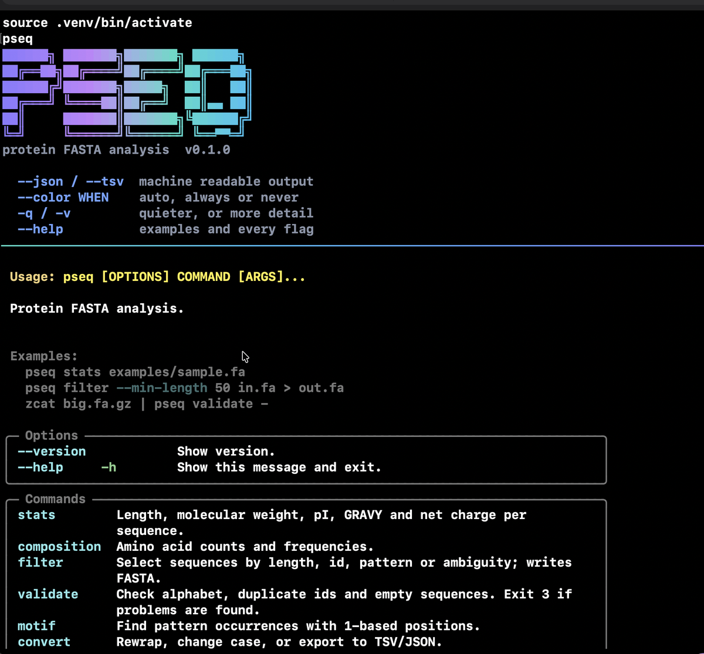
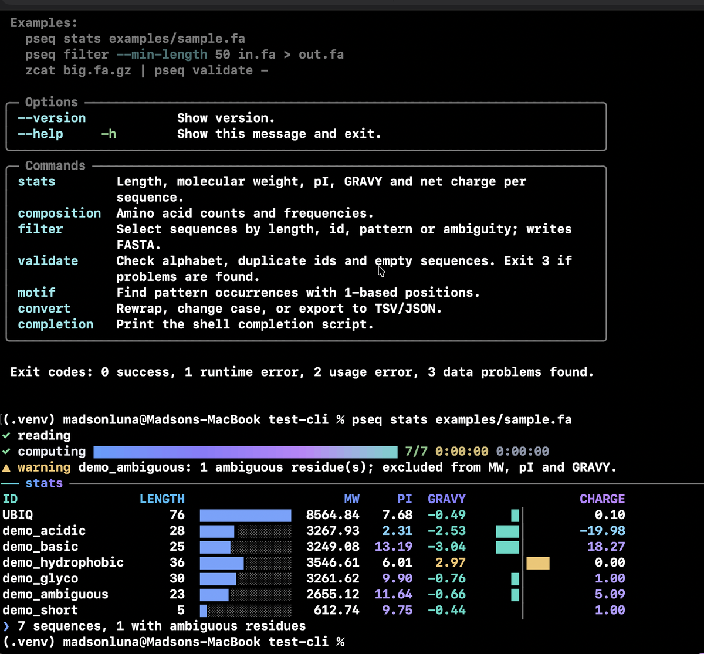

CLI Skill UI
A skill that builds and audits command line tools which survive a pipe and still look like something. The two goals are not in tension: the discipline that makes output safe to redirect, streams kept apart and terminal detection done properly, is exactly what allows the visual layer to be applied without breaking a script downstream.
Two modes, opposite defaults
Build
A new tool, or a new command inside one. Everything the skill carries becomes a default to apply: command shape, flags, help text, exit codes, and the visual identity on top of them.
Audit
A tool that already works. Here the skill reads and runs, and does not modify. Findings are ranked by what they cost the user, not by distance from its own taste, and a tool with its own visual language keeps it. Working behaviour is a specification, because scripts depend on it.
What it covers
Behaviour, first
- Subcommand shape, option syntax and defaults
- Standard output against standard error, and structured output for machines
- Terminal detection, and what changes when there is no terminal or the run is automated
- Help and usage text, error messages and exit codes
- Configuration precedence between flags, environment and files
- Prompts, confirmation, shell completion, accessibility and translation
Appearance, second
- A teal to blue to violet gradient as the identity, with a fallback where colour is off
- Block letter banner, spinners, progress and live panels
- Tables, trees, diffs and streaming output that stay legible when redirected
- Keyboard-driven interfaces in the shape of Claude Code, Gemini CLI, Crush and lazygit
Seen working
The example that ships with the skill is pseq, a tool for protein FASTA analysis. Same banner, same table, same behaviour under a pipe.


What comes in the box
Install
A skill that lives only in its repository cannot be loaded, whatever a listing says. Installing is what makes it available by name.
git clone https://github.com/madsondeluna/skill-cli-devops-and-ui
cd skill-cli-devops-and-ui
make install # copies into ~/.claude/skills
make verify-install # fails when the installed copy has drifted